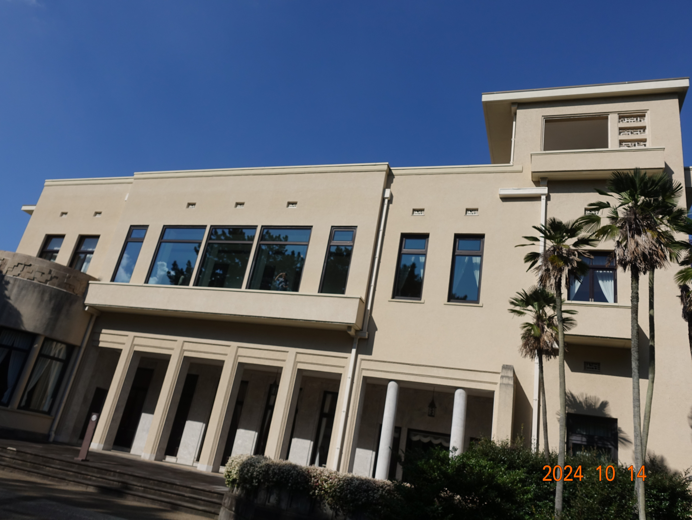

ようやく夏が終わったかと思えば急激な寒さが来るもんでだいぶ悩まされたものだが、テレビで聞いた限りでは来週にはまた寒くなるようだけれど今週はだいぶ過ごしやすい傾向みたいだった。
そうなると連休も相まって散歩日和と言った所だろうか。
なんて事を思っていた所、友人が電話で散歩を兼ねたお茶のお誘いをくれたので数ヶ月ぶりに会うことになった。
とりあえず、目黒駅のすぐそばにある東京都庭園美術館で展示を見て回り庭園を散歩する事にした。
東京都庭園美術館は皇族の邸宅として建てられ、のちに外務大臣公邸等として使われ、今は都営美術館として再利用しているらしい、その建物館内が公開期間だったのだけれど、これがまた見応えのある建物で、想定していたよりも充実した鑑賞が行えた。
その後は目黒の喫茶店でお茶をしたり渋谷の「まんだらけ」で本を物色した後に夕飯を共にして解散した。
数ヶ月ぶりに会ったものだから、話題は絶えなかったし、とても満足度の高い一日だった。
僕は普段からあまり外に出ないし、あまり人とも会わないのだけれど、まぁ二週間から一ヶ月に一度くらいのペースでなら人と会うのも良いかも知れない。 少なくとも電話くらいには出ようと思う。
